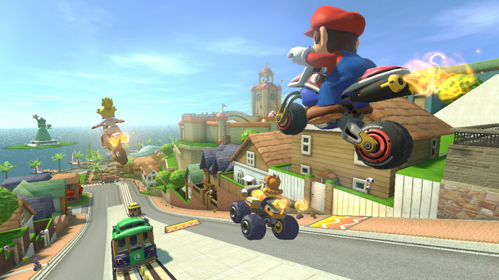

Es una versión ampliada de Mario Kart 8 para Wii U que contiene el juego completo junto con su
contenido descargable y mayor definición de imagen.
En esta edición para Nintendo Switch
podrás jugar a Mario Kart en Alta Definición tanto en tu TV como en el modo portátil por primera
vez en la saga.
Puedes jugar en el modo de un jugador en 48 circuitos diferentes (repartidos en 12 copas)
corriendo contra otros 11 oponentes.
También puedes jugar en Multijugador con hasta
tres amigos más usando los Joy-Con de manera individual. En este caso la pantalla se dividirá
para mostrar a todos los corredores (en dos mitades si son dos jugadores o en tres cuartos si
son más).
Si dispones de amigos con la consola Nintendo Switch, podrás usar el modo
inalámbrico para conectar las consolas y jugar varios jugadores cada uno en su pantalla (hasta
8; con ocho consolas y cada una con su juego en el modo portátil o con 4 consolas y pantallas
divididas en los modos sobremesa o tabletop).
Por último, podrás jugar en línea, uno o dos jugadores podrán jugar al mismo tiempo en una partida en línea. Si son dos, la pantalla se dividirá en dos mitades.
